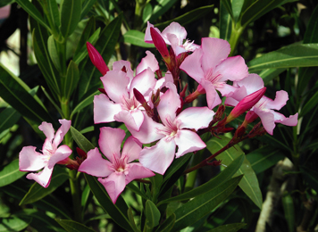

Overview
The plant is known as Karavira and is commonly referred to as the Oleander.
Botanical Name
Nerium indicum
Family
Apocynaceae
Regional Names
- Bengali: Karavi
- Gujarati: Karen
- Hindi: Karen
- Tamil: Kanera
- Telugu: Erra Ganneru
Classification (Gana)
Aacharya Charaka: Tikta Skandha, Kushthaghna
Aacharya Sushruta: Lakshadi, Shirovirechanopaga
Bhavprakash Nighantu: Lakshadi Varga
External Morphology
3-5 meter high erect shrub
Useful Parts
Important Phytoconstituents
- Karabin
- Neriodorine
- Beta-sitosterol
- Nerium D
- Thevefoline
Rasa Panchak
- Rasa: Katu-Tikta
- Guna: Laghu, Ruksha
- Virya: Ushna
- Vipaka: Katu
Action
Kaphavatahara
Therapeutic Indications
- Kushthaghna: Wound healing
- Vranahara: Good for wounds
- Chakshusya: Good for eyes
- Kandughna: Relieves itching
- Krimighna: Anti-helminthic
Therapeutic Uses
- Kustha: Oil prepared with Karavira moola and cow urine is beneficial in skin disorders.
- Indralupta: Karavira juice is beneficial externally to the alopecia affected area.
- Krimi: Root powder with honey is useful in worm infestation in adults.
Dose
Formulations
- Karviradhya Taila
- Karavira Yoga
- Sweta Karviradhya Taila
- Hayamaradi Taila
- Chitrakadi Taila
- Manikya Rasa
Adverse Effects
It is a cardiac toxic drug in overdosage and not safe in children, pregnant, and lactating mothers.
Remedial Measures
Symptomatic treatment according to the severity.
Purification
Not Required